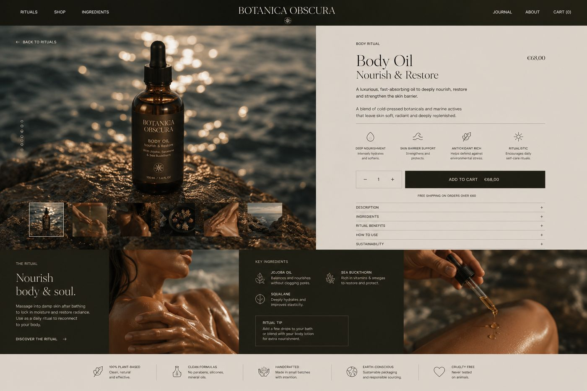
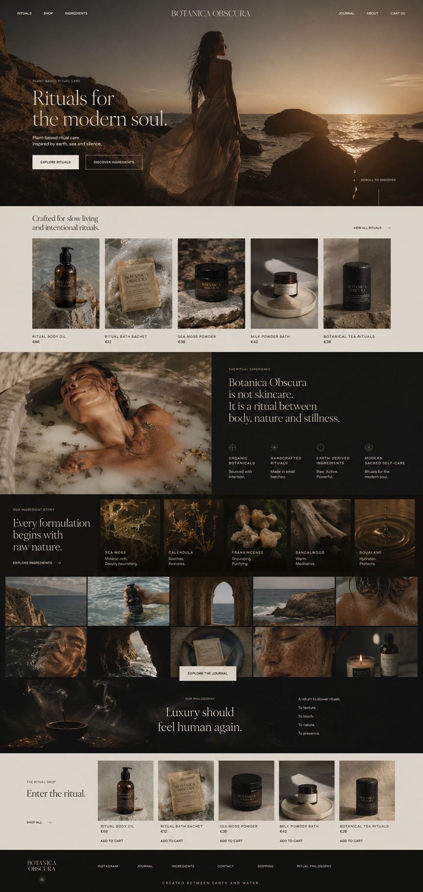
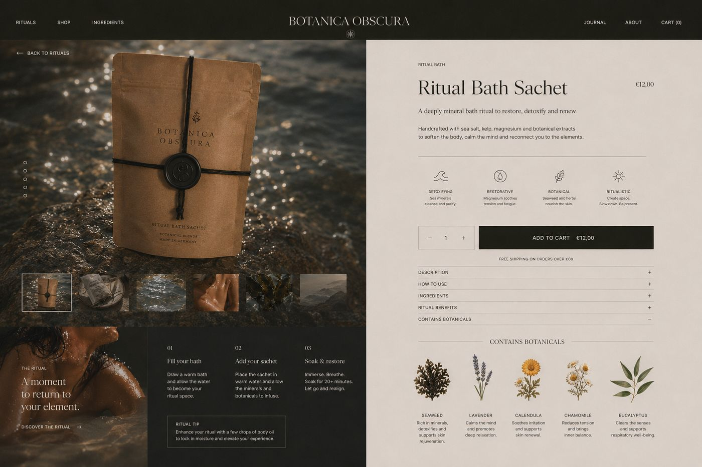
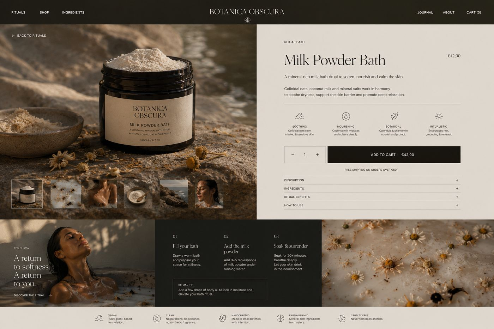

Shop
- Navigation: Rituals, Shop, Ingredients, Journal
- Produktseiten mit Ritual, Zutaten und Anwendung
- Vorteile als Icons auf einen Blick
- Kostenloser Versand ab 60 € sichtbar im Kaufbereich
Ein Onlineshop für Bade- und Körperrituale. Dunkel, botanisch und ruhig, damit sich schon der Besuch wie ein Ritual anfühlt.
Die Idee
Nourish body & soul.
Botanica Obscura verkauft keine einzelnen Pflegeprodukte, sondern Rituale. Jede Produktseite erzählt deshalb, wie man das Produkt anwendet, was drin ist und warum.
Die Gestaltung arbeitet mit dunklen Flächen, warmem Licht auf Wasser und Haut und einer klassischen Serifenschrift.

Was ich gemacht habe


